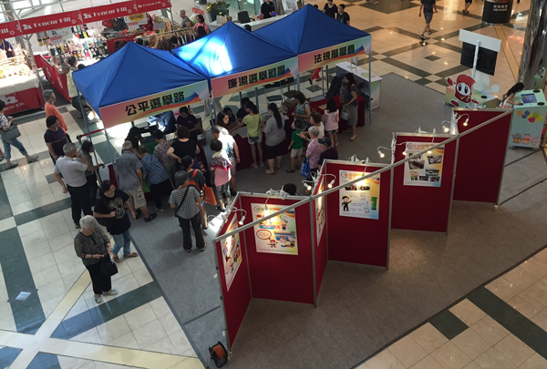
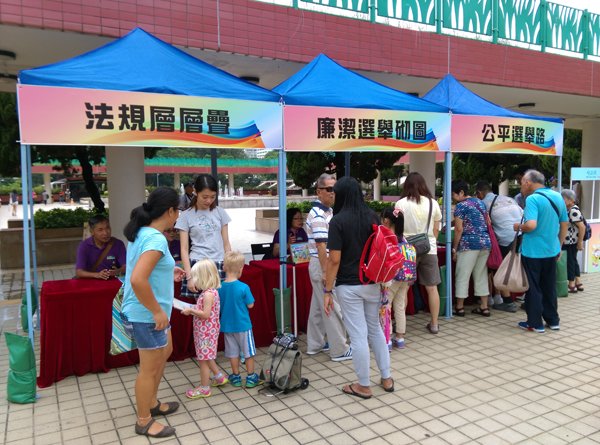
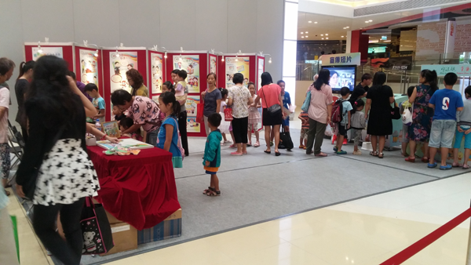
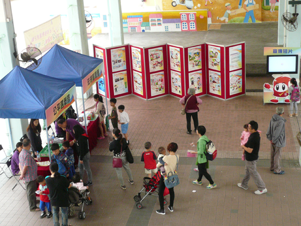

Roving Exhibitions
For the 2016 Legislative Council Election, the ICAC will stage a series of roving exhibitions across the territory starting from mid 2016, featuring cartoon exhibits, video show, interactive games and quizzes, etc., with the aim of promoting clean election messages. Schedule will be uploaded soon.
 
 